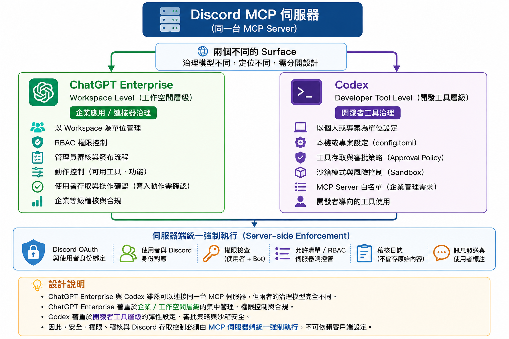

在 Codex（CLI 或 Desktop）用自然語言操作 Discord —— 整理討論、找資訊、草擬與發訊息。
設定一次,之後就用。它只能看到你在 Discord 本來看得到的頻道。

需要先安裝好 Codex（CLI 或 Desktop 皆可,共用同一份設定）
打開「終端機 Terminal」,整段貼上後按 Enter（一次就好）：
cat >> ~/.codex/config.toml <<'EOF'
[mcp_servers.discord]
url = "https://discord-mcp-415359812968.asia-east1.run.app/mcp"
[mcp_servers.discord.oauth]
client_id = "codex"
EOF這段把伺服器位址和登入用的 client_id 寫進你的 Codex 設定檔。client_id = "codex" 這行不能少。
在終端機執行：
codex mcp login discord會自動開瀏覽器跳到 Discord 授權頁 → 確認是你的帳號 → 按 授權。完成後終端機會顯示 Successfully logged in to MCP server 'discord'.
打開 Codex（CLI 打 codex,或開 Codex Desktop），直接用中文講：
用 discord 列出我可以存取的伺服器
整理 #某頻道 最近的討論重點
發訊息到 #某頻道：今天會議改 4 點用 Desktop 的話,加完設定要重開一次 Codex Desktop 才會載到。
就這樣,設定完成。授權只要做這一次,之後開 Codex 就能直接用。
卡住了？
登入時若出現 Dynamic client registration not supported 或登入失敗 —— 多半是 Step 01 的 client_id = "codex" 漏了或打錯。檢查 ~/.codex/config.toml 裡 [mcp_servers.discord.oauth] 下面有沒有這行。
授權連結放超過 10 分鐘才按會過期,重跑一次 codex mcp login discord 即可。
讓全公司同事「連設定都不用做」—— 需要 Codex Enterprise 管理員權限
上面的「自己設定」每人花 2 分鐘即可。若要規模化、讓同事完全不碰設定檔,可由管理員在 Codex Enterprise 後台統一託管。
chatgpt.com/codex/settings/managed-configs（即 Codex 後台的「政策和組態 / Policies」）。非 admin 會看到「Only Codex admins can view policies」。requirements.toml 的 [mcp_servers] 加入 Discord 助理,並可指定套用到哪些 user group：
[mcp_servers.discord]
identity = { url = "https://discord-mcp-415359812968.asia-east1.run.app/mcp" }上線前先 pilot 驗一個人。
官方文件對託管設定的定位偏「allowlist / 政策」（控制同事可啟用哪些 server,以 url 比對）。它是否會一併下發本服務需要的 oauth.client_id = "codex" 尚未在公開文件明確說明。請先用一個同事測:他若不用自己補 client_id 就能登入 = 真正零設定可全推;若仍需補,就退回上面的「自己設定」2 分鐘版,或將 client 設定一併納入託管。
無論哪種方式,每位同事第一次都要點一次 Discord 授權（綁定個人身分,跟 ChatGPT 端一樣,免不了）。admin 託管省掉的是「設定檔」,不是「授權」。